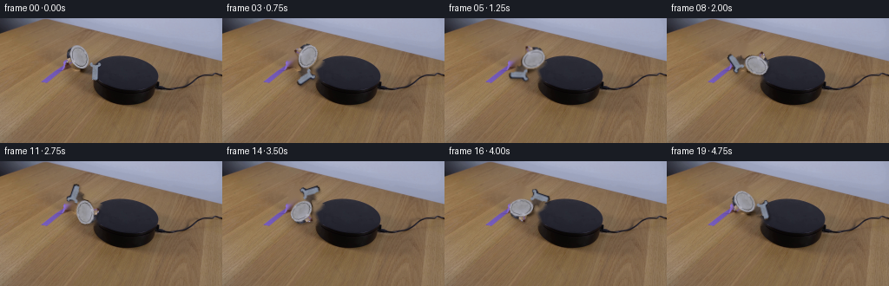
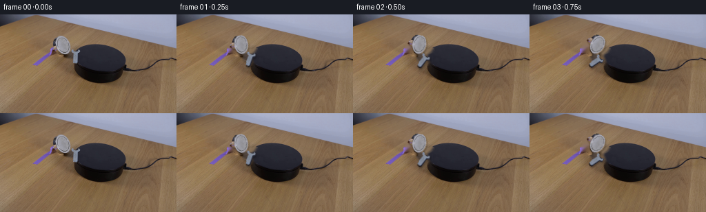

CODING AGENTS AS PIXEL WORLD MODELS
traex/DeepSeek-V4.1-Flash · 0102
点击播放 · 原生 RGB 像素
逐轮保存的候选
回放视频、检查图与代码变化。
每份候选均可单独播放。实际图片检查记录在下方工具轨迹中。
候选 01播放与检查图
点击播放 · 原生 RGB 像素


展开代码变化
--- 上一保存版本
+++ 本次保存版本
@@ -0,0 +1,96 @@
+from pathlib import Path
+
+import cv2
+import numpy as np
+from PIL import Image
+
+import artifact_io
+
+
+CASE_DIR = Path(__file__).resolve().parent
+FRAME_COUNT = 20
+PIVOT = np.array([95.5, 51.0], dtype=np.float32)
+
+
+def wrench_mask(frame):
+ """Segment the silver wrench from the warm tabletop and dark platform."""
+ height, width = frame.shape[:2]
+ yy, xx = np.mgrid[:height, :width]
+ roi = (xx >= 72) & (xx <= 120) & (yy >= 28) & (yy <= 78)
+
+ rgb = frame.astype(np.int16)
+ chroma = rgb.max(axis=2) - rgb.min(axis=2)
+ luminance = rgb.mean(axis=2)
+ candidate = (roi & (chroma < 35) & (luminance > 55)).astype(np.uint8)
+ candidate = cv2.morphologyEx(
+ candidate, cv2.MORPH_CLOSE, np.ones((3, 3), np.uint8)
+ )
+
+ count, labels, stats, _ = cv2.connectedComponentsWithStats(candidate, 8)
+ seed_label = labels[45, 90]
+ if seed_label == 0:
+ raise RuntimeError("Could not locate the wrench in first_frame.png")
+
+ mask = (labels == seed_label).astype(np.uint8)
+ # Remove isolated one-pixel classifications while preserving the open jaw.
+ mask = cv2.morphologyEx(mask, cv2.MORPH_OPEN, np.ones((2, 2), np.uint8))
+ if stats[seed_label, cv2.CC_STAT_AREA] < 400:
+ raise RuntimeError("Wrench segmentation was unexpectedly small")
+ return mask
+
+
+def background_plate(frame, mask):
+ """Remove the original wrench, including its antialiased edge."""
+ removal = cv2.dilate(mask, np.ones((5, 5), np.uint8), iterations=1)
+ return cv2.inpaint(frame, removal * 255, 5, cv2.INPAINT_TELEA)
+
+
+def transform_layer(layer, matrix, shape):
+ return cv2.warpAffine(
+ layer,
+ matrix,
+ (shape[1], shape[0]),
+ flags=cv2.INTER_LINEAR,
+ borderMode=cv2.BORDER_CONSTANT,
+ borderValue=0,
+ )
+
+
+def render_frame(background, wrench, mask, index):
+ # One complete clockwise revolution over the 20-frame loop.
+ angle_cw = index * (360.0 / FRAME_COUNT)
+ matrix = cv2.getRotationMatrix2D(tuple(PIVOT), -angle_cw, 1.0)
+
+ rotated_wrench = transform_layer(wrench, matrix, wrench.shape)
+ rotated_mask = transform_layer(mask.astype(np.float32), matrix, mask.shape)
+ alpha = np.clip(rotated_mask, 0.0, 1.0)
+ alpha = cv2.GaussianBlur(alpha, (3, 3), 0.45)
+ alpha = np.clip(alpha * 1.15, 0.0, 1.0)[..., None]
+
+ # A compact contact shadow keeps the rotating metal visually grounded.
+ shadow_mask = transform_layer(mask.astype(np.float32), matrix, mask.shape)
+ shadow_mask = cv2.GaussianBlur(shadow_mask, (5, 5), 1.15)
+ shadow_mask = np.roll(shadow_mask, shift=(2, 1), axis=(0, 1))[..., None]
+ shaded = background.astype(np.float32)
+ shaded *= 1.0 - 0.28 * np.clip(shadow_mask, 0.0, 1.0)
+
+ out = rotated_wrench.astype(np.float32) * alpha + shaded * (1.0 - alpha)
+ return np.clip(np.rint(out), 0, 255).astype(np.uint8)
+
+
+def main():
+ source = np.asarray(Image.open(CASE_DIR / "first_frame.png").convert("RGB"))
+ mask = wrench_mask(source)
+ background = background_plate(source, mask)
+
+ frames = np.empty((FRAME_COUNT, 144, 256, 3), dtype=np.uint8)
+ frames[0] = source
+ for index in range(1, FRAME_COUNT):
+ frames[index] = render_frame(background, source, mask, index)
+
+ artifact_io.save(frames, CASE_DIR)
+ print(f"Generated {len(frames)} RGB frames at 256x144")
+
+
+if __name__ == "__main__":
+ main()
可观测工具轨迹
实际执行的命令与返回图片。
命令 1exit 0
/bin/bash -c "pwd && rg --files -g '"'!*.mp4'"' -g '"'!*.mov'"' -g '"'!*.webm'"' | sort"
命令 2exit 0
/bin/bash -c "sed -n '1,240p' prompt.txt"
命令 3exit 0
/bin/bash -c "sed -n '1,280p' GENERATION_RULES.md"
命令 4exit 0
/bin/bash -c 'file first_frame.png && identify first_frame.png 2>/dev/null || true && ls -lah'
命令 5exit 0
/bin/bash -c "sed -n '1,260p' artifact_io.py"
命令 6exit 0
/bin/bash -c "sed -n '1,280p' player_template.html"
命令 7exit 0
/bin/bash -c "python - <<'PY'
from PIL import Image
import numpy as np
im=Image.open('first_frame.png')
a=np.array(im)
print(im.mode, im.size, a.shape, a.dtype)
print('range',a.min(),a.max(),'mean',a.mean(axis=(0,1)))
# list dominant quantized colors
q=(a//16)*16
u,c=np.unique(q.reshape(-1,3),axis=0,return_counts=True)
for i in np.argsort(c)[-20:][::-1]: print(tuple(u[i]),int(c[i]))
PY"命令 8exit 0
/bin/bash -c "python - <<'PY'
from PIL import Image
import numpy as np
im=np.array(Image.open('first_frame.png')).astype(float)
# ANSI truecolor half-block render at 64x36 (one char = 4x4 pixels avg)
h,w,_=im.shape
for y in range(0,h,4):
row=[]
for x in range(0,w,4):
c=im[y:y+4,x:x+4].mean((0,1)).astype(int)
r,g,b=c
mx=max(c); mn=min(c)
if mx<28: ch=' '
elif mx<55: ch='.'
elif mx<80: ch=':'
elif mx<110: ch='+'
elif mx<140: ch='*'
elif mx<175: ch='#'
else: ch='@'
# ANSI bg
row.append(f'\\x1b[48;2;{r};{g};{b}m{ch}')
print(''.join(row)+'\\x1b[0m')
PY"命令 9exit 0
/bin/bash -c "python - <<'PY'
from PIL import Image
import numpy as np
a=np.array(Image.open('first_frame.png')).astype(float)
g=(0.2126*a[:,:,0]+0.7152*a[:,:,1]+0.0722*a[:,:,2])
# 2x2 average => 128x72
g=g.reshape(72,2,128,2).mean((1,3))
chars=' .,:;irsXA253hMHGS#9B&@'
for y,row in enumerate(g):
print(f'{y*2:03d} '+''.join(chars[min(len(chars)-1,int(v/256*len(chars)))] for v in row))
PY"命令 10exit 0
/bin/bash -c "python - <<'PY'
from PIL import Image
import numpy as np
a=np.array(Image.open('first_frame.png'))
# save 4 nearest-neighbor scaled crops as SVG? instead make PPM-ish text color category map
# classify black platform: dark blue/gray low luminance
# print 2x2 color category in region x0-230 y30-110
for y in range(28,112,2):
row=''
for x in range(0,240,2):
r,g,b=a[y:y+2,x:x+2].mean((0,1))
if max(r,g,b)<50: c=' '
elif b>r*1.10 and b>g*1.05 and max(r,g,b)<120: c='B'
elif abs(r-g)<12 and abs(g-b)<12 and r>120: c='s'
elif abs(r-g)<10 and abs(g-b)<10 and r>70: c='m'
elif r>g*1.35 and g>b*1.15 and r>95: c='w'
elif r>g*1.15 and g>b*1.1 and r>80: c='W'
elif b>r*1.25 and b>g*1.15: c='p'
else: c='.'
row+=c
print(f'{y:03d} {row}')
PY"命令 11exit 0
/bin/bash -c "python - <<'PY'
from PIL import Image
import numpy as np
a=np.array(Image.open('first_frame.png'))
# crop likely objects and upscale 4x nearest for inspection, label coords
crops={'scene':(0,0,256,144),'left':(0,20,100,105),'center':(90,20,210,110),'right':(140,25,256,115)}
for name,(x0,y0,x1,y1) in crops.items():
im=Image.fromarray(a[y0:y1,x0:x1])
im.resize((im.width*4,im.height*4),Image.Resampling.NEAREST).save('.tmp/'+name+'.png')
print(name,(x0,y0,x1,y1),im.size)
# edge stats / bright pixels bounding clusters
r=a[:,:,0].astype(int);g=a[:,:,1].astype(int);b=a[:,:,2].astype(int)
for desc,m in [
('verydark',(r+g+b)<90),
('blackplatform',(b>r+10)&(b>g+5)&(r<100)&(g<100)&(yind[:,None] if False else True)),
]: pass
PY"命令 12exit 0
/bin/bash -c "python - <<'PY'
try:
import cv2; print('cv2',cv2.__version__)
except Exception as e: print('no cv2',e)
try:
import scipy; print('scipy',scipy.__version__)
except Exception as e: print('no scipy',e)
try:
import sklearn; print('sklearn',sklearn.__version__)
except Exception as e: print('no sklearn',e)
PY"命令 13exit 0
/bin/bash -c "python - <<'PY'
from PIL import Image
import numpy as np, cv2
a=np.array(Image.open('first_frame.png'))
# segment black/neutral/blue objects by low luma and saturation, table is warm
hsv=cv2.cvtColor(a,cv2.COLOR_RGB2HSV)
r,g,b=[a[:,:,i].astype(int) for i in range(3)]
# platform is dark bluish/gray, wrench silver but dark in places; magnet black
masks={
'darkneutral':((r+g+b)<230)&(abs(r-g)<25)&(abs(g-b)<35),
'darkblue':(b>r+6)&(b>g+4)&((r+g+b)<300),
'darkall':(r+g+b)<170,
'silver':(abs(r-g)<12)&(abs(g-b)<20)&(r>65)&(r<190),
}
for name,m in masks.items():
n,lab,st,cent=cv2.connectedComponentsWithStats(m.astype('uint8'),8)
comps=[]
for i in range(1,n):
x,y,w,h,area=st[i]
if area>=20: comps.append((area,x,y,w,h,tuple(round(v,1) for v in cent[i])))
print('\\n',name, 'pixels',m.sum(), 'comps')
for c in sorted(comps,reverse=True)[:20]: print(c)
PY"命令 14exit 0
/bin/bash -c "python - <<'PY'
from PIL import Image
import numpy as np, cv2
a=np.array(Image.open('first_frame.png'))
g=cv2.cvtColor(a,cv2.COLOR_RGB2GRAY)
g=cv2.GaussianBlur(g,(3,3),0)
e=cv2.Canny(g,30,90)
n,lab,st,cent=cv2.connectedComponentsWithStats(e,8)
for i in sorted(range(1,n), key=lambda i:st[i,4], reverse=True)[:60]:
x,y,w,h,area=st[i]
print(area,(x,y,w,h),tuple(round(v,1) for v in cent[i]))
PY"命令 15exit 0
/bin/bash -c "python - <<'PY'
from PIL import Image
import numpy as np
a=np.array(Image.open('first_frame.png'))
# Print RGB codes grid for candidate regions, every pixel/2 using compact palette labels
for name,(x0,y0,x1,y1) in {'wrench':(45,45,105,85),'platform':(100,40,220,110),'right':(185,55,256,100)}.items():
print('\\n###',name)
pal=[]
def code(c):
r,g,b=map(int,c)
if max(c)<25: ch=' '
elif b>r*1.3 and b>g*1.2: ch='P'
elif abs(r-g)<10 and abs(g-b)<15 and r>120: ch='S'
elif r>g*1.3 and g>b*1.2: ch='w'
elif r>g*1.2 and g>b*1.1: ch='W'
elif max(c)<55: ch='.'
elif max(c)<90: ch=':'
else: ch='+'
return ch
for y in range(y0,y1,1):
print(f'{y:03d} '+''.join(code(a[y,x]) for x in range(x0,x1)))
PY"命令 16exit 0
/bin/bash -c "python - <<'PY'
from PIL import Image
import numpy as np, cv2
a=np.array(Image.open('first_frame.png')).astype(int)
r,g,b=[a[:,:,i] for i in range(3)]
# candidates for metal: bright neutral, excluding warm wood
mask=(r>70)&(abs(r-g)<18)&(abs(g-b)<25)&(b>r-10)
# restrict scene excluding top weird
mask[:20]=0
n,lab,st,cent=cv2.connectedComponentsWithStats(mask.astype('uint8'),8)
print('metal neutral comps')
for i in sorted(range(1,n),key=lambda i:st[i,4],reverse=True)[:30]:
x,y,w,h,area=st[i]
if area>=5:
px=a[lab==i]
print(area,(x,y,w,h),'mean',px.mean(0).round(1),'cent',cent[i].round(1))
# platform interior gray points positions grouped by y
print('platform bright neutral pixels by row')
for y in range(40,105):
xs=np.where(mask[y,105:205])[0]+105
if len(xs): print(y, xs.tolist())
PY"命令 17exit 0
/bin/bash -c "python - <<'PY'
from PIL import Image
import numpy as np
a=np.array(Image.open('first_frame.png'))
# dump region x75-135 y40-78 with RGB color names and precise colors per representative pixels
# Use ascii at 1px, classify hue + brightness
for y in range(38,82):
row=''
for x in range(70,140):
r,g,b=map(int,a[y,x]); mx=max(r,g,b); mn=min(r,g,b)
if mx<20: c=' '
elif mx<45: c='.'
elif mx<70: c=':'
elif mx<95: c='o'
elif mx<120: c='O'
elif mx<145: c='x'
elif mx<170: c='X'
elif mx<195: c='#'
else: c='@'
if b>r+15 and b>g+10: c=c.lower() if c not in ' .' else 'b'
row+=c
print(f'{y:03d} {row}')
print('colors:')
for y in [50,52,54,56,58,60,62,64,66,68,70]:
print(y,[tuple(a[y,x]) for x in range(75,135,3)])
PY"命令 18exit 0
/bin/bash -c "python - <<'PY'
from PIL import Image
import numpy as np, cv2
a=np.array(Image.open('first_frame.png'))
g=cv2.cvtColor(a,cv2.COLOR_RGB2GRAY)
# Sobel magnitude and orientation for left object
sx=cv2.Sobel(g,cv2.CV_32F,1,0,ksize=3); sy=cv2.Sobel(g,cv2.CV_32F,0,1,ksize=3)
mag=np.hypot(sx,sy)
for y in range(24,84):
row=''
for x in range(65,135):
m=mag[y,x]
if m<80: c=' '
elif m<180: c='.'
elif m<350: c='+'
elif m<650: c='#'
else: c='@'
row+=c
print(f'{y:03d} {row}')
PY"命令 19exit 0
/bin/bash -c "python - <<'PY'
from PIL import Image
import numpy as np
a=np.array(Image.open('first_frame.png'))
# analyze brightest neutral pixels in left x70:130 y25:85: candidate wrench
r,g,b=[a[:,:,i].astype(int) for i in range(3)]
m=(abs(r-g)<12)&(abs(g-b)<18)&(r>105)
ys,xs=np.where(m & (np.indices(m.shape)[1]>=70)&(np.indices(m.shape)[1]<130)&(np.indices(m.shape)[0]>=25)&(np.indices(m.shape)[0]<85))
print(len(xs), 'bbox', (xs.min(),ys.min(),xs.max(),ys.max()), 'cent', (xs.mean(),ys.mean()))
# PCA orientation
p=np.column_stack([xs,ys]); cov=np.cov(p.T); print('cov',cov,'eig',np.linalg.eigh(cov))
# for each y, x ranges of metal-like pixels, use stronger neutral threshold
for y in range(28,78):
xs=np.where(m[y,70:130])[0]+70
if len(xs):
print(y, xs.tolist())
PY"命令 20exit 0
/bin/bash -c "python - <<'PY'
from PIL import Image
import numpy as np
a=np.array(Image.open('first_frame.png'))
# Segment large black platform via low luma and neutral-ish/blue
r,g,b=[a[:,:,i].astype(int) for i in range(3)]
m=(r+g+b<210)&(b>=r-4)&(b>=g-4)
import cv2
n,lab,st,cent=cv2.connectedComponentsWithStats(m.astype('uint8'),8)
for i in sorted(range(1,n),key=lambda i:st[i,4],reverse=True)[:12]:
x,y,w,h,area=st[i]
if area>20:
print('comp',i,'area',area,'bbox',(x,y,w,h),'cent',cent[i])
# row span and column span every 5 rows
for yy in range(y,min(y+h,110),5):
xs=np.where(lab[yy]==i)[0]
if len(xs): print(' ',yy,int(xs.min()),int(xs.max()),len(xs))
PY"命令 21exit 0
/bin/bash -c "python - <<'PY'
from PIL import Image
import numpy as np
a=np.array(Image.open('first_frame.png'))
# find distinct connected dark background/platform mask by flood from seed 150,70, color tolerance based on local patch
import cv2
for seed in [(150,70),(160,70),(130,75),(210,70)]:
x,y=seed
flood=np.zeros(a.shape[:2],np.uint8)
mask=np.zeros((a.shape[0]+2,a.shape[1]+2),np.uint8)
diff=np.max(abs(a.astype(int)-a[y,x].astype(int)),axis=2)
flags=4|(255<<8)
cv2.floodFill(diff.astype('uint8'),mask,(x,y),1,loDiff=(20,),upDiff=(20,),flags=flags)
m=mask[1:-1,1:-1]>0
ys,xs=np.where(m)
print(seed,'pix',len(xs),'bbox',xs.min(),ys.min(),xs.max(),ys.max())
for yy in range(ys.min(),min(ys.max()+1,110),5):
xx=np.where(m[yy])[0]
if len(xx):print(yy,xx.min(),xx.max(),len(xx))
PY"命令 22exit 0
/bin/bash -c "python - <<'PY'
from PIL import Image
import numpy as np
a=np.array(Image.open('first_frame.png')).astype(int)
# print detailed color-coded grid x98-122 y45-76: R,G,B integer triplets abbreviated by brightness+hue
for y in range(43,78):
row=[]
for x in range(96,125):
r,g,b=a[y,x]
lum=(r+g+b)/3
if lum<35: ch=' '
elif lum<50: ch='.'
elif lum<70: ch=':'
elif lum<95: ch='o'
elif lum<120: ch='O'
elif lum<145: ch='x'
elif lum<165: ch='X'
elif lum<185: ch='#'
else: ch='@'
# neutral vs warm vs blue
if b>r+12 and b>g+8: ch=ch.lower() if ch not in ' .' else 'b'
elif r>b+30 and g>b+12: ch=ch.upper() if ch in ' .:' else ch
row.append(ch)
print(f'{y:03d} '+''.join(row))
print('\\nselected pixel values')
for y in range(50,73):
print(y,[(x,tuple(a[y,x])) for x in range(101,119) if a[y,x].max()>110 or a[y,x].min()<30])
PY"命令 23exit 0
/bin/bash -c "python - <<'PY'
from PIL import Image
import numpy as np
a=np.array(Image.open('first_frame.png')).astype(float)
# grayscale ascii, 1px = one char, crop x95:245,y38:108, 150 cols
lum=(.2126*a[:,:,0]+.7152*a[:,:,1]+.0722*a[:,:,2])
chars=' .:-=+*#%@'
for y in range(38,108):
row=''
for x in range(95,245):
v=lum[y,x]
row+=chars[min(9,int(v/220*10))]
print(f'{y:03d} {row}')
PY"命令 24exit 0
/bin/bash -c "python - <<'PY'
from PIL import Image
import numpy as np
a=np.array(Image.open('first_frame.png')).astype(int)
# connected component after closing metal candidate mask in left object
import cv2
r,g,b=[a[:,:,i] for i in range(3)]
m=((abs(r-g)<18)&(abs(g-b)<25)&(r>75)&(b>r-8)).astype('uint8')
m[:25]=0;m[:, :65]=0;m[:,135:]=0;m[85:]=0
m=cv2.morphologyEx(m,cv2.MORPH_CLOSE,np.ones((3,3),np.uint8))
n,lab,st,cent=cv2.connectedComponentsWithStats(m,8)
for i in sorted(range(1,n),key=lambda i:st[i,4],reverse=True)[:20]:
x,y,w,h,area=st[i]
print(area,(x,y,w,h),cent[i].round(1))
PY"命令 25exit 0
/bin/bash -c "python - <<'PY'
from PIL import Image
import numpy as np
a=np.array(Image.open('first_frame.png'))
# Print RGB quantized grid for object regions with row/col headers
# left object only, quantize channels to 32
for y in range(30,72,2):
vals=[]
for x in range(76,122,2):
c=a[y:y+2,x:x+2].mean((0,1)).astype(int)//24*24
vals.append('%02x%02x%02x'%tuple(c))
print(f'{y:03d}',' '.join(vals))
PY"命令 26exit 0
/bin/bash -c "python - <<'PY'
from PIL import Image
import numpy as np
a=np.array(Image.open('first_frame.png')).astype(int)
# candidate magnet segmentation in right part x185:256 y55:100
r,g,b=[a[:,:,i] for i in range(3)]
for y in range(60,90):
row=''
for x in range(185,256):
lum=(r[y,x]+g[y,x]+b[y,x])/3
blue=b[y,x]-r[y,x]
if lum<25: ch=' '
elif lum<45: ch='.'
elif lum<65: ch=':'
elif lum<85: ch='o'
elif lum<105: ch='O'
elif lum<130: ch='x'
elif lum<155: ch='X'
else: ch='#'
if blue>25: ch=ch.lower() if ch not in ' .' else 'b'
row+=ch
print(f'{y:03d} {row}')
PY"命令 27exit 0
/bin/bash -c "python - <<'PY'
from PIL import Image
import numpy as np, cv2
a=np.array(Image.open('first_frame.png'))
# Make enhanced crops of likely objects with exact nearest + contrast/sharpen for numeric visibility metadata
for name,(x0,y0,x1,y1) in {
'obj_left':(65,25,125,90),'obj_center':(100,38,190,105),'obj_right':(185,52,256,100),
}.items():
c=a[y0:y1,x0:x1]
c=cv2.resize(c,None,fx=8,fy=8,interpolation=cv2.INTER_NEAREST)
Image.fromarray(c).save('.tmp/'+name+'_8x.png')
print(name, (x0,y0,x1,y1))
# print exact RGB stats and PCA of components for left and right likely objects
for name,(x0,y0,x1,y1),cond in [
('left silver',(70,25,125,80),lambda r,g,b:(abs(r-g)<25)&(abs(g-b)<30)&(r>65)),
('right dark',(185,55,256,100),lambda r,g,b:(r+g+b<230)),
('center platform',(105,40,190,100),lambda r,g,b:(r+g+b<200)),
]:
ar=a[y0:y1,x0:x1]; rr,gg,bb=[ar[:,:,i].astype(int) for i in range(3)]
m=cond(rr,gg,bb); ys,xs=np.where(m)
print(name,'n',len(xs),'bbox', (xs.min()+x0,ys.min()+y0,xs.max()+x0,ys.max()+y0), 'cent',(xs.mean()+x0,ys.mean()+y0))
PY"命令 28exit 0
/bin/bash -c "python - <<'PY'
from PIL import Image
import numpy as np
a=np.array(Image.open('first_frame.png'))
# extract all non-warm pixels in center/right; classify color values and connected comps
import cv2
r,g,b=[a[:,:,i].astype(int) for i in range(3)]
for desc,m in {
'blue_dark':(b>r+8)&(b>g+5)&(b<150)&(r<120),
'black':(r+g+b<180)&(b>=r-10),
'metallic':(abs(r-g)<22)&(abs(g-b)<32)&(r>65)&(r<190)&(b>r-15),
}.items():
n,lab,st,cent=cv2.connectedComponentsWithStats(m.astype('uint8'),8)
print('\\n',desc)
for i in sorted(range(1,n),key=lambda i:st[i,4],reverse=True)[:15]:
x,y,w,h,area=st[i]
if area>10: print(area,(x,y,w,h),'mean',a[lab==i].mean(0).round(1),'cent',cent[i].round(1))
PY"命令 29exit 0
/bin/bash -c "python - <<'PY'
from PIL import Image
import numpy as np, cv2
a=np.array(Image.open('first_frame.png'))
# print all pixels in left wrench crop x75:120 y28:78 as symbol categories including RGB brightness
# use 1 char per pixel; object against warm background should stand out as neutral.
for y in range(25,82):
row=''
for x in range(70,125):
r,g,b=map(int,a[y,x]); lum=(r+g+b)/3
warm=(r-g>18 and g-b>8)
neutral=max(r,g,b)-min(r,g,b)<25
if lum<35: c=' '
elif lum<55: c='.'
elif lum<75: c=':'
elif lum<95: c='-'
elif lum<115: c='='
elif lum<135: c='+'
elif lum<155: c='*'
elif lum<175: c='#'
else: c='@'
if neutral and lum>60: c=c.upper()
elif warm: c=c.lower() if c in ' ' else c
row+=c
print(f'{y:03d} {row}')
PY"命令 30exit 0
/bin/bash -c "python - <<'PY'
from PIL import Image
import numpy as np
a=np.array(Image.open('first_frame.png'))
# print dominant colors in candidate left head x77:101 y31:58 and handle x104:114 y52:72
for name,(x0,y0,x1,y1) in {'head':(77,31,101,58),'handle':(104,52,114,72),'platform':(120,55,170,80),'magnet':(200,65,245,90)}.items():
c=a[y0:y1,x0:x1].reshape(-1,3)
q=(c//8)*8
u,n=np.unique(q,axis=0,return_counts=True)
print('\\n',name,c.shape)
for i in np.argsort(n)[-12:][::-1]: print(tuple(map(int,u[i])),int(n[i]))
PY"命令 31exit 0
/bin/bash -c "python - <<'PY'
from PIL import Image
import numpy as np
a=np.array(Image.open('first_frame.png'))
# crop wrench and save 12x nearest with a coordinate grid overlay every 5 px for numeric inspection
x0,y0,x1,y1=70,25,125,85
c=a[y0:y1,x0:x1]
s=8
im=Image.fromarray(c).resize(((x1-x0)*s,(y1-y0)*s),Image.Resampling.NEAREST)
# draw grid lines and labels using local PIL fonts
from PIL import ImageDraw
D=ImageDraw.Draw(im)
for x in range(x0,x1+1,5):
X=(x-x0)*s; D.line((X,0,X,im.height),fill=(255,0,0),width=1); D.text((X+1,0),str(x),fill=(255,255,0))
for y in range(y0,y1+1,5):
Y=(y-y0)*s; D.line((0,Y,im.width,Y),fill=(255,0,0),width=1); D.text((1,Y+1),str(y),fill=(255,255,0))
im.save('.tmp/wrench_grid.png')
print(im.size)
PY"命令 32exit 0
/bin/bash -c "python - <<'PY'
from PIL import Image
import numpy as np
a=np.array(Image.open('first_frame.png')).astype(int)
# Search likely thin handle by scanning lines Hough in region excluding head
import cv2
g=cv2.cvtColor(a.astype('uint8'),cv2.COLOR_RGB2GRAY)
# edge crop
roi=g[25:90,65:130]
e=cv2.Canny(roi,20,60)
lines=cv2.HoughLinesP(e,1,np.pi/720,threshold=8,minLineLength=8,maxLineGap=4)
if lines is not None:
ls=[]
for l in lines[:,0]:
x1,y1,x2,y2=l; x1+=65;x2+=65;y1+=25;y2+=25
length=np.hypot(x2-x1,y2-y1); ang=np.degrees(np.arctan2(y2-y1,x2-x1))
ls.append((length,ang,(x1,y1,x2,y2)))
for z in sorted(ls,reverse=True)[:40]: print(tuple(round(v,1) if isinstance(v,float) else v for v in z))
PY"命令 33exit 0
/bin/bash -c "python - <<'PY'
from PIL import Image
import numpy as np
a=np.array(Image.open('first_frame.png')).astype(float)
h,w,_=a.shape
for y in range(0,h,2):
row=''
for x in range(0,w,2):
r,g,b=a[y:y+2,x:x+2].mean((0,1)); mx=max(r,g,b); mn=min(r,g,b); lum=(r+g+b)/3
if x==0: pass
if r>g+12 and g>b+8:
if lum>100: c='w'
elif lum>55: c='d'
else: c='.'
elif abs(r-g)<10 and abs(g-b)<14:
if lum>120: c='S'
elif lum>70: c='g'
elif lum>35: c='x'
else: c=' '
elif b>r+10 and b>g+5:
if lum>100: c='T'
elif lum>45: c='p'
else: c='P'
else:
c='?'
row+=c
print(f'{y:03d} {row}')
PY"命令 34exit 0
/bin/bash -c "python - <<'PY'
from PIL import Image
import numpy as np
a=np.array(Image.open('first_frame.png')).astype(int)
r,g,b=[a[:,:,i] for i in range(3)]
# candidate neutral-bright pixels; print mask in left region and center region
for name,(x0,y0,x1,y1) in {'left':(65,25,125,90),'center':(95,40,190,105),'right':(180,50,256,105)}.items():
print('\\n###',name)
print(' '+''.join(str((x//10)%10) for x in range(x0,x1)))
print(' '+''.join(str(x%10) for x in range(x0,x1)))
for y in range(y0,y1):
row=''
for x in range(x0,x1):
rr,gg,bb=a[y,x]
neutral=max(rr,gg,bb)-min(rr,gg,bb)<22
lum=(rr+gg+bb)/3
if neutral and lum>75: ch='@'
elif neutral and lum>55: ch='O'
elif neutral and lum>35: ch='o'
elif lum<25: ch=' '
elif lum<50: ch='.'
elif lum<75: ch=':'
elif lum<100: ch='-'
elif lum<125: ch='='
elif lum<150: ch='+'
elif lum<175: ch='*'
elif lum<200: ch='#'
else: ch='%'
row+=ch
print(f'{y:03d} {row}')
PY"命令 35exit 0
/bin/bash -c "python - <<'PY'
from PIL import Image
import numpy as np, cv2
a=np.array(Image.open('first_frame.png')).astype(np.int16)
r,g,b=[a[:,:,i] for i in range(3)]
roi=np.zeros(a.shape[:2],bool); roi[28:74,74:118]=1
neutral=(np.maximum.reduce([r,g,b])-np.minimum.reduce([r,g,b])<30)
lum=(r+g+b)/3
m=(roi&neutral&(lum>55)).astype(np.uint8)
# close small gaps, then keep large connected comps
m=cv2.morphologyEx(m,cv2.MORPH_CLOSE,np.ones((3,3),np.uint8))
m=cv2.morphologyEx(m,cv2.MORPH_OPEN,np.ones((2,2),np.uint8))
n,lab,st,cent=cv2.connectedComponentsWithStats(m,8)
keep=np.zeros_like(m)
for i in range(1,n):
if st[i,4]>=15: keep[lab==i]=1
print('n comps',[(int(st[i,4]),tuple(map(int,st[i,:4]))) for i in range(1,n) if st[i,4]>=5])
ys,xs=np.where(keep)
print('bbox',xs.min(),ys.min(),xs.max(),ys.max(),'area',len(xs),'cent',xs.mean(),ys.mean())
# output mask overlay + mask alone scaled
out=a.astype(np.uint8).copy(); out[keep.astype(bool)]=[255,0,255]
Image.fromarray(out).resize((1024,576),Image.Resampling.NEAREST).save('.tmp/mask_overlay.png')
Image.fromarray((keep*255).astype(np.uint8)).resize((1024,576),Image.Resampling.NEAREST).save('.tmp/mask.png')
# print mask
for y in range(28,75):
row=''
for x in range(72,120):
row += '#' if keep[y,x] else ('.' if roi[y,x] else ' ')
print(f'{y:03d} {row}')
PY"命令 36exit 0
/bin/bash -c "python - <<'PY'
from PIL import Image
import numpy as np, cv2
a=np.array(Image.open('first_frame.png')).astype(np.int16)
for thresh,lumth in [(25,50),(30,55),(35,55),(38,55),(42,60),(48,60)]:
r,g,b=[a[:,:,i] for i in range(3)]
roi=np.zeros(a.shape[:2],bool); roi[28:78,74:122]=1
neutral=(np.maximum.reduce([r,g,b])-np.minimum.reduce([r,g,b])<thresh)
lum=(r+g+b)/3
m=(roi&neutral&(lum>lumth)).astype(np.uint8)
m=cv2.morphologyEx(m,cv2.MORPH_CLOSE,np.ones((3,3),np.uint8))
n,lab,st,cent=cv2.connectedComponentsWithStats(m,8)
seed=lab[45,90]
if seed==0:
print(thresh,lumth,'no seed')
continue
keep=(lab==seed)
ys,xs=np.where(keep)
print(thresh,lumth,'area',len(xs),'bbox',xs.min(),ys.min(),xs.max(),ys.max(),'cent',round(xs.mean(),1),round(ys.mean(),1))
PY"命令 37exit 0
/bin/bash -c "python - <<'PY'
from PIL import Image
import numpy as np, cv2
a=np.array(Image.open('first_frame.png')).astype(np.int16)
r,g,b=[a[:,:,i] for i in range(3)]
roi=np.zeros(a.shape[:2],bool); roi[28:78,74:122]=1
neutral=(np.maximum.reduce([r,g,b])-np.minimum.reduce([r,g,b])<35)
lum=(r+g+b)/3
m=(roi&neutral&(lum>55)).astype(np.uint8)
m=cv2.morphologyEx(m,cv2.MORPH_CLOSE,np.ones((3,3),np.uint8))
n,lab,st,cent=cv2.connectedComponentsWithStats(m,8)
keep=lab==lab[45,90]
for y in range(28,78):
row=''
for x in range(72,122):
row += '#' if keep[y,x] else ('.' if roi[y,x] else ' ')
print(f'{y:03d} {row}')
# PCA
ys,xs=np.where(keep)
print('PCA')
pts=np.column_stack([xs,ys]); cov=np.cov(pts.T); val,vec=np.linalg.eigh(cov); print(val,vec, 'angle',np.degrees(np.arctan2(vec[1,1],vec[0,1])))
PY"命令 38exit 0
/bin/bash -c "python - <<'PY'
from PIL import Image
import numpy as np, cv2
a=np.array(Image.open('first_frame.png')).astype(np.int16)
# calculate color difference between known table patches, platform, and objects
patches={'table_top':(30,20,60,35),'table_mid':(30,70,60,90),'platform':(125,55,175,80),'black_table':(80,90,110,100),'head':(82,35,96,50),'handle':(106,58,112,70)}
for n,(x0,y0,x1,y1) in patches.items():
p=a[y0:y1,x0:x1].reshape(-1,3)
print(n,'mean',p.mean(0).round(1),'std',p.std(0).round(1),'median',np.median(p,0))
# rows of black platform boundary: detect low luminance in broad region and print span per row
r,g,b=[a[:,:,i] for i in range(3)]; lum=(r+g+b)/3
for y in range(38,105):
xs=np.where(lum[y,90:240]<55)[0]+90
if len(xs):
# groups
groups=[]; start=xs[0]; prev=xs[0]
for x in xs[1:]:
if x>prev+1: groups.append((start,prev)); start=x
prev=x
groups.append((start,prev))
print(y,groups)
PY"命令 39exit 0
/bin/bash -c "python generate.py && python - <<'PY'
from PIL import Image
import numpy as np, hashlib
src=np.array(Image.open('first_frame.png'))
out=np.array(Image.open('frames/00.png'))
print('frame0_equal',np.array_equal(src,out),'sha',hashlib.sha256(out.tobytes()).hexdigest()[:16])
print('inspection',Image.open('inspection.png').size)
PY"命令 40exit 0
/bin/bash -c "python - <<'PY'
from PIL import Image
import numpy as np
# numeric checks across generated frames: object delta bbox, global diff, RGB mean
ims=np.stack([np.array(Image.open(f'frames/{i:02d}.png')) for i in range(20)])
base=ims[0].astype(int)
for i in range(20):
d=np.max(np.abs(ims[i].astype(int)-base),axis=2)
ys,xs=np.where(d>12)
bbox=(int(xs.min()),int(ys.min()),int(xs.max()),int(ys.max())) if len(xs) else None
print(f'{i:02d}', 'mean',tuple(np.round(ims[i].mean((0,1)),1)), 'changed',int((d>12).sum()), 'bbox',bbox, 'max',int(d.max()))
PY"命令 41exit 0
/bin/bash -c "python - <<'PY'
from PIL import Image
import numpy as np
# make a numerical contact sheet of the changed region across 20 frames, scale 3 and labeled
ims=[]
for i in range(20):
a=np.array(Image.open(f'frames/{i:02d}.png'))
ims.append(Image.fromarray(a[20:90,60:130]).resize((280,280),Image.Resampling.NEAREST))
sheet=Image.new('RGB',(5*280,4*280),(20,20,20))
for i,im in enumerate(ims): sheet.paste(im,((i%5)*280,(i//5)*280))
sheet.save('.tmp/motion_sheet.png')
# frames compare masks via neutral pixels within window
for i in [0,1,5,10,15,19]:
a=np.array(Image.open(f'frames/{i:02d}.png')).astype(int)
r,g,b=[a[:,:,i] for i in range(3)]
m=(np.maximum.reduce([r,g,b])-np.minimum.reduce([r,g,b])<35)&((r+g+b)/3>55)
m=m[20:90,60:130]
ys,xs=np.where(m)
print(i,len(xs),(xs.min()+60,ys.min()+20,xs.max()+60,ys.max()+20), (round(xs.mean()+60,1),round(ys.mean()+20,1)))
PY"命令 42exit 0
/bin/bash -c "python - <<'PY'
from PIL import Image
import numpy as np
# Analyze wrench inpainting: compare frame1 removed region to nearby clean table; locate any obvious artifacts
for i in [1,5,10,15]:
a=np.array(Image.open(f'frames/{i:02d}.png')).astype(float)
# sample inpainting region excluding rotated wrench currently? Print broad stats by rows
print('\\nframe',i)
for y in range(25,85,5):
c=a[y,70:125]
print(y,'mean',c.mean(0).round(1),'std',c.std(0).round(1))
PY"命令 43exit 0
/bin/bash -c "which ffmpeg || true; which python; python - <<'PY'
try:
import imageio; print('imageio',imageio.__version__)
except Exception as e: print('no imageio',e)
PY
ls -lah frames | head; ls -lh pixels.npz index.html inspection.png transition_check.png"命令 44exit 0
/bin/bash -c "python - <<'PY'
from PIL import Image
import numpy as np
# examine whether object after rotation is actually visually coherent by evaluating neutral mask overlap with transform of source mask
import cv2
src=np.array(Image.open('first_frame.png'))
r,g,b=[src[:,:,i].astype(int) for i in range(3)]
roi=np.zeros(src.shape[:2],bool);roi[28:78,74:122]=1
m=((np.maximum.reduce([r,g,b])-np.minimum.reduce([r,g,b])<35)&((r+g+b)/3>55)&roi).astype('uint8')
m=cv2.morphologyEx(m,cv2.MORPH_CLOSE,np.ones((3,3),np.uint8))
n,lab,st,c=cv2.connectedComponentsWithStats(m,8); mask=(lab==lab[45,90]).astype('uint8')
# save individual frame crops in grid with original next to it
ims=[]
for i in range(20):
a=np.array(Image.open(f'frames/{i:02d}.png'))
crop=a[22:88,62:128]
ims.append(Image.fromarray(crop).resize((264,264),Image.Resampling.NEAREST))
sheet=Image.new('RGB',(5*264,4*264),(20,20,20))
for i,im in enumerate(ims): sheet.paste(im,((i%5)*264,(i//5)*264))
sheet.save('.tmp/wrench_motion_sheet.png')
print('saved .tmp/wrench_motion_sheet.png')
PY"命令 45exit 0
/bin/bash -c "python - <<'PY'
from PIL import Image
import numpy as np
frames=np.stack([np.array(Image.open(f'frames/{i:02d}.png')) for i in range(20)]).astype(np.int16)
# motion energy and wraparound should be similar to adjacent steps
steps=[]
for i in range(20):
j=(i+1)%20
d=np.abs(frames[j]-frames[i]).mean()
steps.append(d)
print('step means', ' '.join(f'{v:.3f}' for v in steps))
print('wrap step',f'{steps[-1]:.3f}','median',f'{np.median(steps[:-1]):.3f}')
# boundaries outside local animation box should remain unchanged vs frame 0
box=np.ones((144,256),bool); box[20:85,60:130]=False
for i in range(20):
diff=np.abs(frames[i]-frames[0]).max(2)
print(i,'outside_max',int(diff[box].max()),'outside_changed',int((diff[box]>0).sum()))
PY"命令 46exit 0
/bin/bash -c "python - <<'PY'
from PIL import Image
import numpy as np
# inspect transformed object against original around pivot; output extent and centroid for neutral metal only in animation box
for i in range(20):
a=np.array(Image.open(f'frames/{i:02d}.png')).astype(int)
r,g,b=[a[:,:,i] for i in range(3)]
chroma=np.maximum.reduce([r,g,b])-np.minimum.reduce([r,g,b])
lum=(r+g+b)/3
m=(chroma<35)&(lum>65)
m[:20]=0;m[85:]=0;m[:,:55]=0;m[:,135:]=0
ys,xs=np.where(m)
print(f'{i:02d}', 'n',len(xs),'bbox',(int(xs.min()),int(ys.min()),int(xs.max()),int(ys.max())),'cent',(round(xs.mean(),1),round(ys.mean(),1)))
PY"命令 47exit 0
/bin/bash -c "python - <<'PY'
from pathlib import Path
import numpy as np
from PIL import Image
import imageio.v2 as imageio
frames=np.stack([np.asarray(Image.open(f'frames/{i:02d}.png').convert('RGB')) for i in range(20)])
imageio.mimsave('preview.mp4',frames,fps=4,codec='libx264',quality=9,macro_block_size=1)
with np.load('pixels.npz') as z:
p=z['pixels']
print('pixels',p.shape,p.dtype)
print('preview',Path('preview.mp4').stat().st_size)
PY"命令 48exit 0
/bin/bash -c "git status --short 2>/dev/null || true; python -m py_compile generate.py; python - <<'PY'
from pathlib import Path
from PIL import Image
import numpy as np
p=Path('.')
assert len(list((p/'frames').glob('*.png')))==20
src=np.array(Image.open('first_frame.png'))
assert np.array_equal(src,np.array(Image.open('frames/00.png')))
with np.load('pixels.npz') as z:
a=z['pixels']
assert a.shape==(144,256,20) and a.dtype==np.uint32
for i in range(20):
im=Image.open(f'frames/{i:02d}.png'); assert im.size==(256,144) and im.mode=='RGB'
print('validated: 20 RGB frames, 256x144, frame 00 exact, packed tensor present')
PY"命令 49exit 0
/bin/bash -c "ls -lh generate.py preview.mp4 pixels.npz index.html inspection.png transition_check.png; python - <<'PY'
from PIL import Image
import numpy as np
im=Image.open('transition_check.png')
print('transition_check',im.size)
# verify first four frames differ in intended region and no NaN/etc possible with uint8
for i in range(4):
a=np.array(Image.open(f'frames/{i:02d}.png'))
print(i,a.shape,a.dtype,a.min(),a.max())
PY"保存候选 1 份；完成命令 49 次；可验证图片返回 0 张。原始 API 响应与完整日志保留在本地。